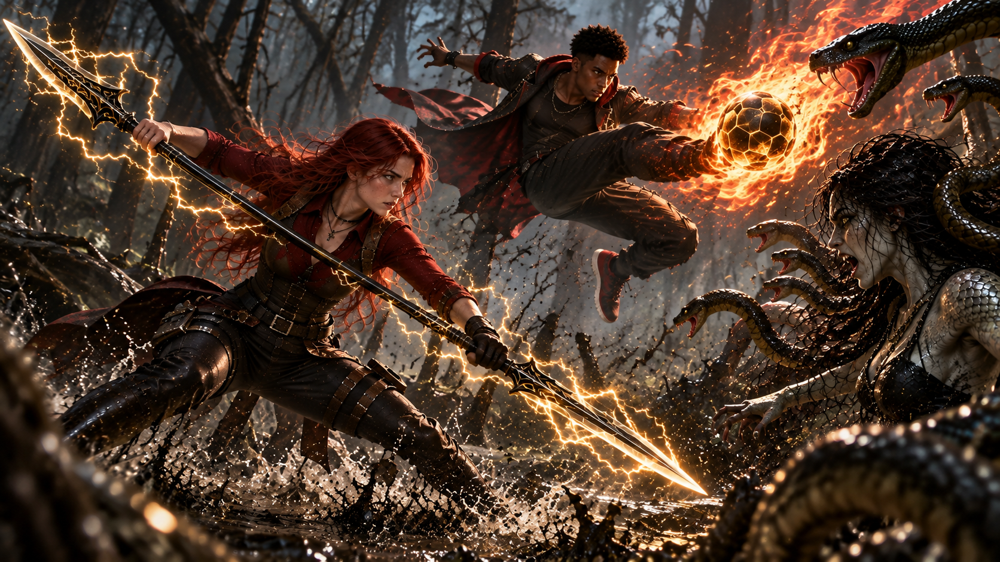
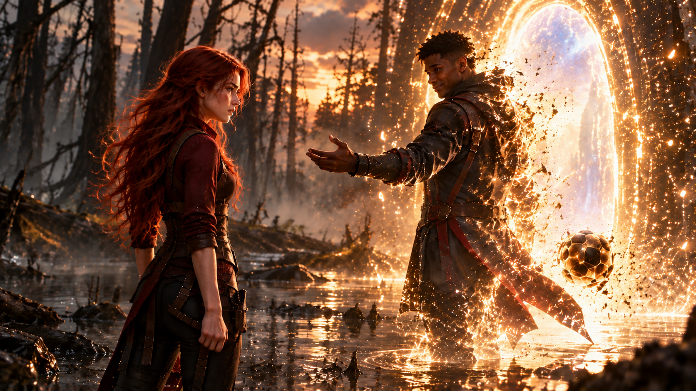

WHITE MAGIC ART STUDIO
第十八章
紐澤西事件
寇德薩拉．記憶迴廊
柴克的腳才剛踏出暗門，鞋底便陷進一片濕軟的泥地。
「噁——這什麼東西？」
他連忙拔起右腳，卻發現左腳也已經沾滿泥水。
克里斯緊跟著走出白光，環顧四周。
原本熟悉的安德烈家老宅早已消失。
取而代之的，是一片被綠色濃霧籠罩的沼澤。
腐葉漂浮在混濁的水面，枯樹的枝幹向四周扭曲伸展。泥潭深處不時冒出氣泡，在水面破裂，發出低沉的聲響。
空氣潮濕而沉悶，瀰漫著腐敗植物的氣味。
柴克皺著鼻子，試著找一塊比較乾燥的地方落腳。
「安娜！」
他繞過一截倒下的樹幹，朝霧中喊道。
「妳在哪裡？」
聲音傳出去不遠，便被濃霧吞沒。
克里斯蹲下身，捻起一點泥土。
「這裡的環境，有點像西雅圖附近的沼澤森林。」
他站起來，望向四周。
「不過，我們應該已經進入安娜的記憶了。」
柴克忽然停住。
「哥。」
「怎麼？」
「你還記得我們進來之前，安娜說過她最害怕什麼嗎？」
克里斯想了想。
「紐澤西那次任務？」
他皺起眉頭。
「一個墮落的女巫，身上長著蛇鱗……」
「對。」
柴克的聲音突然放輕。
「就是那個。」
克里斯轉頭看向他。
柴克慢慢抬起手，指向前方。
「因為她現在就在那裡。」
濃霧之中，一道人影站在數公尺外的淺水裡。
那是個身形異常高挑的女人。
濕漉漉的黑髮垂在臉側，裸露的皮膚覆蓋著不規則的青綠色鱗片。數條細蛇盤繞在她的雙臂上，不時吐出蛇信。
女人微微側著頭。
彷彿正在傾聽沼澤裡的動靜。
克里斯立刻拉住柴克。
「蹲下。」
兩人迅速藏到一棵傾斜的枯樹後方。
柴克壓低呼吸，透過樹幹間的縫隙觀察。
「她有看到我們嗎？」
「先別動。」
克里斯探出頭。
女人仍站在原處。
兩人沿著樹幹緩緩移動，準備繞往另一棵枯樹。
柴克忍不住回頭看了一眼。
水面上，只剩下一圈圈逐漸擴散的漣漪。
「哥……」
「怎麼了？」
「她不見了。」
克里斯猛然回頭。
「快走！」
兩人才剛轉身，一股潮濕而冰冷的氣息便從頭頂襲來。
柴克下意識抬頭。
那個女人，竟倒掛在樹枝上。
黑髮垂落。
覆滿鱗片的面孔，近得幾乎貼到他的眼前。
「嘶——！」
「哇啊！」
柴克嚇得跌坐在泥地里，手腳並用地向後退。
女人猛然撲下！
「柴克！」
克里斯抬起右手。
翡翠綠色的程式碼迅速聚集，在柴克面前構成一道半透明護盾。
鏘！
利爪撞上護盾，發出刺耳的摩擦聲。
柴克被震得向後一縮。
「這東西到底是什麼啊！」
克里斯沒有回答。
他正準備展開第二層防禦，頭頂忽然傳來一聲雷鳴。
轟——！
一道銀白色閃電穿過濃霧，正面擊中女人，將她掀飛到遠處的枯樹間。
泥水四濺。
柴克愣愣地抬起頭。
一道熟悉的身影從霧中走來。
黑金相間的雙頭細劍握在手中，劍刃上仍有細小的電流跳動。
「我不是跟你們說過了嗎？」
安娜看著兩個狼狽的哥哥。
「這傢伙真的很恐怖。」
「安娜！」
柴克連忙從泥地裡爬起來。
「妳到底跑去哪裡了啊！」
「一直在找你們。」
安娜走到兩人前方，目光重新落在那個女人身上。
被雷電擊倒的蛇女，已經從泥水裡站了起來。
她發出尖銳的嘶鳴，雙臂上的蛇群也隨之躁動。
安娜握緊艾連。
「你們去找出口。」
克里斯皺眉。
「妳確定可以一個人對付她？」
「我以前就打敗過她。」
安娜將雙頭劍橫在身前。
「這次也一樣。」
話音剛落，蛇女便猛然衝來！
安娜腳下一點，迎面躍起。
雙頭劍與利爪在半空相撞，爆出一道耀眼的雷弧。
「走！」
克里斯抓住柴克的手臂，帶著他往沼澤深處跑去。
身後接連傳來雷鳴與撞擊聲。
兩人穿過一條狹窄的泥路，又繞過幾棵枯樹。
然而，不論朝哪個方向前進，迎接他們的始終是相似的泥潭與濃霧。
「哥！」
柴克喘著氣。
「你的雷之演算法不能直接找出口嗎？」
「我在試。」
克里斯停下腳步。
綠色數據陣圖在掌中展開，細密的光線向四周延伸。
一道道程式碼快速排列，試圖勾勒出周圍的地形。
然而才過幾秒，陣圖便開始劇烈閃爍。
原本已經成形的路線突然扭曲，接著徹底消失。
克里斯望著空蕩蕩的掌心。
「不行。」
「為什麼？」
「這裡是安娜的記憶空間。」
克里斯看向四周。
「地形會隨著記憶改變，演算法無法建立穩定的空間模型。」
柴克望向前方。
原本看似能通行的小徑，走近後才發現，早已被深潭阻斷。
「那我們要怎麼出去？」
克里斯沒有立刻回答。
遠處再次傳來雷聲。
他轉頭望向戰鬥的方向。
安娜踩著雷光躍過蛇女頭頂。
艾連在掌中翻轉，兩端劍刃交錯劃出十字形的電弧。
蛇女扭身避開，利爪擦過安娜的護臂，激起一串火花。
安娜順勢旋身，一腳將對方踢退。
她重新握穩艾連。
兩道雷電從劍刃疾射而出！
蛇女舉起覆滿鱗片的雙臂，硬生生擋下攻擊，隨即衝破雷光，猛然揮爪。
砰！
安娜被震飛出去，撞上身後的枯樹。
她跌進泥水裡，忍著疼痛撐起身體。
蛇女正朝她逼近。
安娜擦過嘴角，重新握緊艾連。
「我能打敗妳一次……」
她站穩腳步。
「就能打敗妳第二次！」
蛇女發出尖叫，猛然撲來。
安娜將雙頭劍刺入泥地。
轟！
一道金色雷柱從地面升起，將蛇女掀向半空。
然而，一道黑水般的殘影卻突然從蛇女身後分離，沿著泥潭迅速滑行，繞向安娜沒有防備的側面。
遠處的克里斯看見這一幕。
「安娜！後面！」
安娜猛然轉身。
但一道金紅色火光，已先一步劃破濃霧。
轟——！
燃燒的球體擊中黑影，連同蛇女一起掀飛出去。
火焰映亮整片沼澤。
那顆球體在半空旋轉數圈，最後落在泥地上。
竟是一顆黑金相間的足球。
表面仍燃燒著金紅色的火焰。
一道高挑的身影，從霧中緩緩走來。
紅黑相間的戰鬥風衣隨著熱浪輕輕揚起。
「還是跟以前一樣。」
青年看著安娜。
「一打起來就這麼衝動，安德烈。」
安娜愣住。
她握著艾連，怔怔望著來人。
「……艾克？」
青年朝她露出熟悉的笑容。
沼澤邊緣。
克里斯遠遠看見艾克加入戰鬥。
但蛇女仍在泥水間快速移動，戰況沒有立刻平息。
克里斯停下腳步。
他的目光落在旁邊一處被藤蔓遮住的山洞。
「柴克，過來。」
「幹嘛？」
柴克還沒反應過來，就被克里斯拉進洞裡。
「哥？」
克里斯伸出手。
翡翠綠色的程式碼在空中迅速排列，化成數面透明光牆，將洞口牢牢封住。
柴克一怔。
「等一下。」
他伸手碰向屏障。
堅硬得像一面厚牆。
「你在幹嘛？」
「這裡很安全。」
克里斯檢查了一眼防護結構。
「你先待著。」
柴克的表情變了。
「你又要把我留在這裡？」
「我得回去幫安娜。」
「可是我們不是要一起找出口嗎？」
克里斯看向戰場的方向。
「她現在需要支援。」
「那我呢？」
「你留在這裡。」
克里斯轉回頭。
「等我回來。」
「克里斯！」
柴克用力拍向屏障。
「你不能每次都這樣！」
克里斯停頓了一瞬。
他看著屏障另一側的弟弟。
剛才在老屋裡看見的記憶，忽然掠過腦海。
那個哭著抱住自己的十歲男孩。
以及自己曾經在拉比面前立下的祈求。
克里斯握了握拳。
最後，仍然轉過身。
「我會回來。」
他衝進濃霧。
「哥！」
柴克追到洞口，卻被光牆擋住。
「克里斯！回來！」
綠色屏障紋絲不動。
哥哥的身影很快消失。
柴克站在原地，聽著遠處傳來的戰鬥聲。
又是這樣。
查德失蹤時，他幫不上忙。
父親的秘密，他直到最近才知道。
現在，連安娜在外面戰鬥，他都只能被哥哥關在安全的地方。
柴克緩緩握緊拳頭。
「可惡……」
他一拳砸向屏障。
光牆微微震動。
卻沒有任何裂痕。
柴克咬緊牙關，再次揮拳。
「給我打開！」
砰！
屏障依然完好。
他喘著氣，低頭看向自己的雙手。
就在這時——
滋。
指尖突然傳來熟悉的麻痺感。
柴克怔住。
一道金黃色電流沿著手背閃過。
緊接著，更多雷光從掌心浮現，沿著指節不斷跳動。
柴克慢慢抬起手。
「這是……」
他看向眼前的屏障。
深吸一口氣。
右手握拳。
金色雷光逐漸聚集。
這一次，他沒有胡亂揮拳。
而是將注意力集中在掌心的電流上。
那股力量不像先前那樣失去方向。
反而隨著他的意念，一點一點凝聚。
「給我……」
他猛然向前揮拳。
「破開！」
轟！
金雷撞上綠色光牆。
整座屏障劇烈震動。
原本平整的表面，竟出現數道細小裂痕。
柴克睜大眼睛。
他後退半步。
重新握緊拳頭。
第二次。
金色雷電再次亮起。
沼澤中央。
艾克抬腳，將燃燒的足球踢向蛇女。
火球劃出一道弧線，迫使對方向側面閃避。
「安娜！」
艾克喊道。
「接上！」
「知道了！」
安娜踩著電光衝向側翼。
艾連在掌中旋轉，兩端劍刃同時亮起雷光。
艾克的足球再次飛出。
火焰與雷電在半空交會。

轟——！
金紅色火光與雷霆一同爆發，將蛇女籠罩其中。
強烈的衝擊掀起泥水。
待光芒散去，蛇女的身影已經消失。
只剩下逐漸散去的黑煙。
安娜放下艾連。
艾克伸手接住飛回的足球。
兩人相視一眼。
還沒來得及開口，旁邊的樹叢突然傳來一聲巨響。
轟！
金色雷光衝破樹枝。
柴克從裡面跑了出來。
「克里斯！你這個混蛋——」
他猛然停住。
眼前的戰鬥已經結束。
安娜站在艾克身旁，正朝他看過來。
柴克尷尬地放下拳頭。
「……所以你們已經打完了？」
克里斯卻根本沒在聽。
他看著柴克，又看向弟弟手上尚未完全消散的金色雷光。
「等等。」
克里斯走近一步。
「你怎麼出來的？」
柴克看向哥哥。
「什麼怎麼出來？」
「我的屏障。」
柴克抬起手。
金色電流在指間跳了一下。
「我好像稍微掌握到一點技巧了。」
克里斯盯著那道雷光。
過了幾秒，才輕輕笑了一聲。
「有意思……」
柴克則將目光轉向安娜身旁的青年。
「所以，那個人是誰？」
克里斯順著他的視線看去。
「艾克・丹佛斯。」
「美國聖術會旗下，頂尖驅魔組織『守護者』的核心成員。」
柴克點點頭。
克里斯接著說：
「他以前也是安娜的聖術教練。」
「喔。」
「還有她的初戀。」
柴克猛然轉頭。
「初戀？！」
克里斯神色平靜。
「安娜以前暗戀他。」
「真的假的？」
克里斯沒有回答，只是看向不遠處的兩人。
艾克收回足球術器，走向安娜。
「妳比以前更強了。」
安娜輕輕一笑。
「你也一樣。」
艾克看著她。
「我還是覺得妳很適合加入守護者。」
安娜的笑容慢慢收斂。
「艾克……」
「妳的能力，不應該只留在東湖教會，處理那些小型任務。」
艾克停了一下。
「我們需要妳。」
他望著安娜。
「我也需要妳。」
安娜垂下眼睛。
「我知道。」
她沉默片刻。
「加入守護者，對我來說一直很有吸引力。」
「可是我有更重要的責任。」
安娜抬起頭。
「我必須留在鹽湖城。」
「你知道的。」
艾克沒有立刻放棄。
「那至少跟我回一趟華盛頓。」
「我可以介紹妳認識聖術會的前輩，讓妳有更多機會。」
他向前一步。
「安德烈，妳還有很多選擇。」
安娜看著他。
有一瞬間，她像是想說些什麼。
最後卻還是搖頭。
「謝謝你，艾克。」
「但我真的沒辦法。」
艾克安靜下來。
沼澤裡的霧仍緩緩流動。
他望著安娜，過了片刻才問：
「即使是今天，我再問妳一次……」
「妳的答案還是一樣嗎？」
安娜沒有避開他的目光。
「是。」
她輕聲說。
「我不會改變。」
艾克看著她。
沒有再勸。
下一秒，他的身影開始發光。
安娜一怔。
細小的光點從艾克的肩膀、手臂與衣角升起。

他整個人逐漸變得透明。
最後，連同那顆黑金足球一起，化成無數漂浮的光粒。
光點在半空盤旋。
緩緩聚集。
一道明亮的光門，出現在沼澤中央。
克里斯走到安娜身旁。
看著那扇門。
「看來……」
他輕聲說。
「妳找到出口了。」
安娜望著光門，點了點頭。
「嗯。」
她勉強露出一抹笑容。
「我們繼續前進吧。」
說完，她轉身走向出口。
光芒映在她的臉上。
眼角有一點濕潤。
安娜沒有回頭。